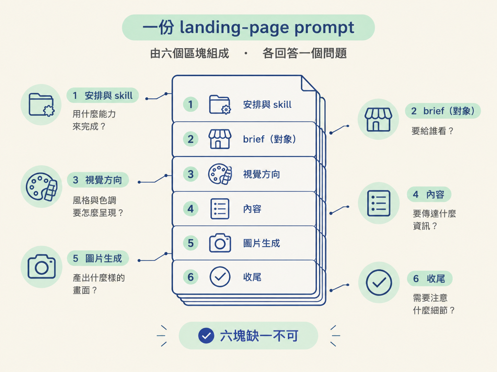
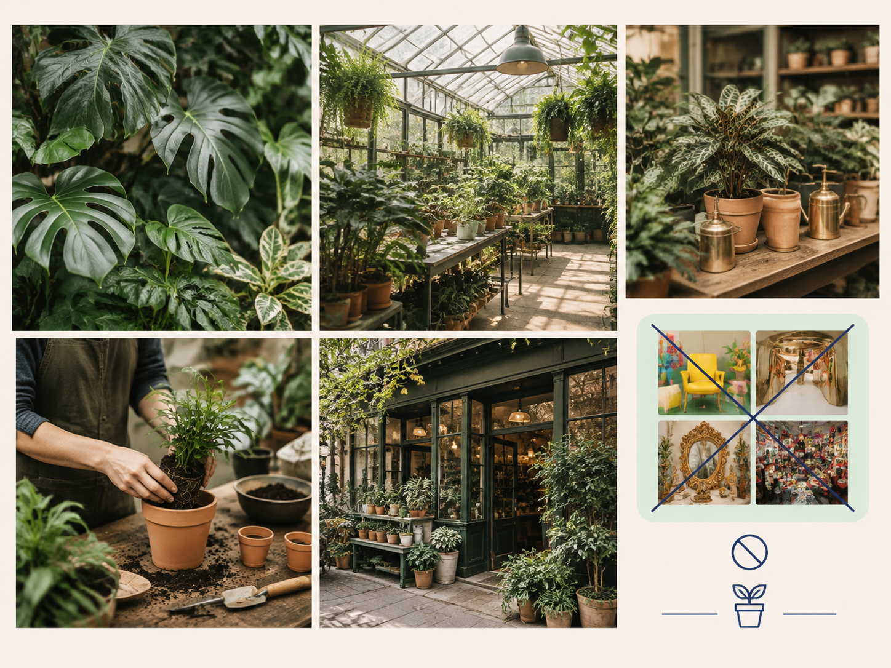

自己寫 landing page 的 brief，最常見的結果是：成品有股「AI 味」：配色安全、文案空泛、圖片是亮晶晶的插畫。問題多半不在模型，而在 brief 只寫了「做一個植物店的 landing page」這種一句話規格。這份查閱資料給你一份可直接照抄的骨架：一份 landing-page prompt 該包含哪六個區塊、每一塊負責什麼，以及各塊的取捨界線。
一份 landing-page prompt 是給 Codex 的單一指令檔，由六個區塊組成：安排與 skill、brief（對象）、視覺方向、內容、圖片生成、收尾。每個區塊回答一個不同的問題，缺哪一塊，成品就會在對應的地方走樣。

| # | 區塊 | 在範例裡負責什麼 |
|---|---|---|
| 1 | 安排與 skill | 在哪裡建、用哪些 skill：lp-example 資料夾、Sites、兩個 repo skill |
| 2 | brief（對象） | 這是給誰的什麼東西：Fern & Clay 這間虛構植物店 |
| 3 | 視覺方向 | 氛圍、材質、配色、字體性格，以及「不要像什麼」 |
| 4 | 內容 | 頁面上要放哪些實際資訊，並要求文案具體有用 |
| 5 | 圖片生成 | 要什麼風格的照片、要出現什麼、要避免什麼 |
| 6 | 收尾 | 品質標準（響應式、無障礙、精緻）與發布方式 |
開頭兩件事：把網站建在一個新資料夾（lp-example），以及使用哪兩個 skill。指名 skill 是有原因的：如果 repo 的 AGENTS.md 沒有要求，Codex 不一定會自動撿起來用；先講清楚，它才會套用。忘了名稱時，在 Codex 裡打一個 $ 就能列出所有可用的 skill。
一句話交代這是一個什麼東西：一間虛構的社區植物店兼溫室。有了這句，接下來所有的方向與內容才有依附的對象。對象可以是餐廳、書店、健身房，只要把「是誰、在哪、做什麼」講清楚。
整份 brief 裡最關鍵的一塊，也是篇幅最長的一塊。它包含：氛圍（老倫敦的冬天花園）、材質（起霧的溫室玻璃、風化的磚、老木頭、亞麻、陶盆、小黃銅配件）、配色（深綠為主，點綴柔和陶土色、米白與黃銅）、字體性格（優雅的襯線字配簡單好讀的支撐字體），以及兩條「不要像什麼」的界線：不要像通用的生活風格品牌，也不要像現代儀表板。
列出頁面要放的實際資訊：一個以溫室為主視覺的主視覺區、目前可購買的植物、實用的植物照護說明、小型工作坊、營業時間、在地配送，以及完整的到店資訊。最後再補一句品質要求：「文案要具體、有用」。這裡刻意保持粗略：如果你知道確切要幾個區塊，可以更直接地下指令；否則把資訊講清楚，讓模型自己去安排區塊順序，通常表現也不錯。
指定圖片要用 image generation 產出，風格是「真實的編輯式攝影」，並列出要出現的畫面：大量的葉片植物、溫室內部、植栽台、換盆工作坊、店面。後面接一串「避免」：避免亮色、光亮表面、過度裝飾與雜亂。這一塊如果省略風格，模型可能改用 SVG 插畫，成品會離你的預期很遠。

最後一句同時交代品質標準與交付方式：做成響應式、無障礙、精緻，然後用 Sites 私下發布。品質標準通常會自動發生，但明寫出來可以避免成品做得潦草。
以下來自課程 repo 的 prompts/landing-page.txt，對象是虛構的倫敦植物店「Fern & Clay」。它不是標準答案，而是一個結構清楚的樣板，可以照著骨架換成自己的主題。
Create a new site in a folder called `lp-example` using Sites.
Build a landing page for Fern & Clay, a fictional neighbourhood plant shop and working greenhouse in Stoke Newington, London.
Use the `design-ui-with-restraint` and `write-practical-copy` skills.
The page should feel like an old London winter garden: fogged greenhouse glass, weathered brick, aged timber, linen, terracotta pots and small brass details. Use a natural palette dominated by deep greens, with muted terracotta, cream and brass accents. Pair an elegant serif typeface with simple, readable supporting typography.
Keep the design warm, editorial and spacious. It should feel authentic and quaint, like a real independent shop people would want to visit—not a generic lifestyle brand or modern dashboard.
Include a strong greenhouse-led hero, plants currently available, practical plant-care help, small workshops, opening hours, local delivery and complete visit information. Keep the copy concrete and useful.
Generate realistic editorial photography for the page using image generation. Show leafy plants throughout, along with the greenhouse interior, plant benches, a potting workshop and the shopfront. Avoid bright colours, glossy surfaces, excessive decoration and clutter.
Make the page responsive, accessible and polished, then publish it privately with Sites.要判斷各塊的取捨與順序，看前一節的決策規則；要動手跑起來，看下一節的完整操作。